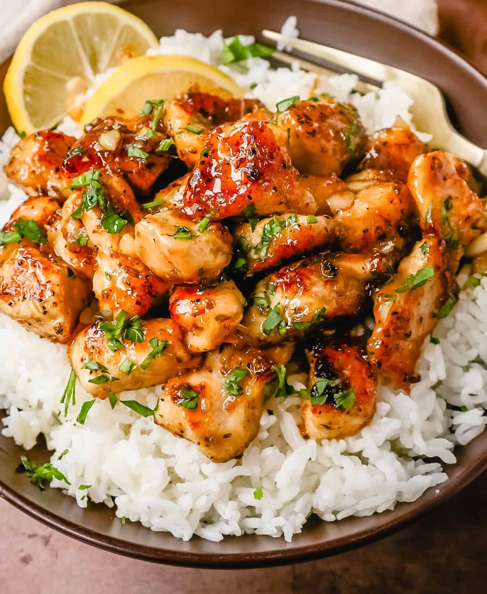

Honey Glazed Chicken

An easy sweet and spicy meal, perfect for dinner!
Sticky and Easy Honey Garlic Chicken made fast and simple, with the most
amazing 5 ingridients. This meal is so good you will want to eat it
everyday
The perfect meal to have when you feel like eating something sweet with a
hint of savoury. Crisp and sticky skin, a beautiful sauce and perfectly
cooked chicken. It doesn’t get any better!
Ingredients
- ¼ cup honey
- 2 tablespoons soy sauce
- ⅛ teaspoon red pepper flakes
- 1 ½ tablespoons olive oil
-
2 skinless, boneless chicken breast halves, cut into bite-size pieces
Steps
- Gather all ingredients.
-
Whisk honey, soy sauce, and red pepper flakes in a bowl; set aside.
-
Heat olive oil in a skillet over medium heat; cook and stir chicken in
hot oil until lightly brown, about 5 minutes.
-
Pour honey mixture into the skillet; continue to cook and stir until
chicken is no longer pink in the center and sauce is thickened, about 5
minutes more.
- Serve hot and enjoy!
Return to main page